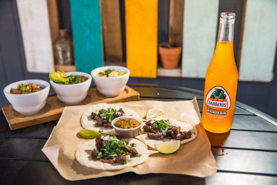

About LTS
LTS was founded in 2022. Our shop was built from a love of tacos 🌮🌮🌮. We hope our shop adds a unique and interesting place to our little town.

LTS was founded in 2022. Our shop was built from a love of tacos 🌮🌮🌮. We hope our shop adds a unique and interesting place to our little town.